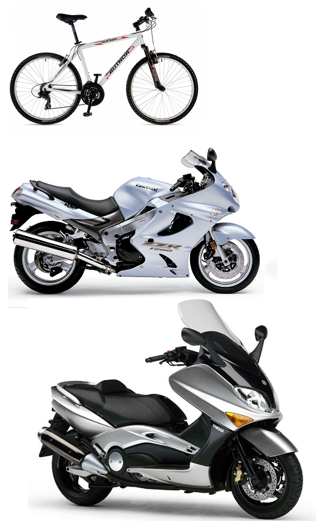
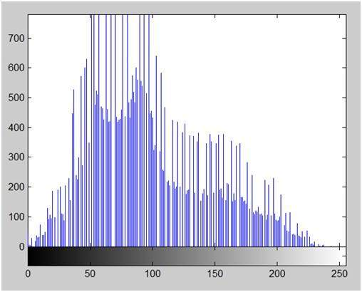
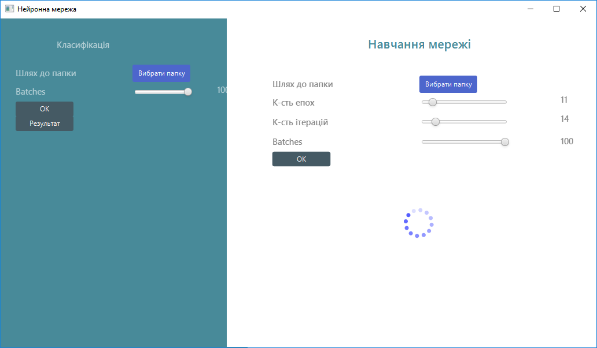
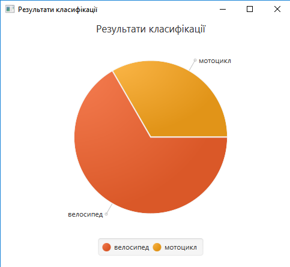

Розпізнавання зображень за допомогою згорткових нейронних мереж
Нейронні мережі стали невід’ємною частиною практично усіх сфер людського життя. Особливу увагу варто приділити згортковим нейронним мережам (ЗНМ), основним призначенням яких є розпізнавання зображень. Значного поштовху у розвитку ЗНМ отримали в останні 5 – 10 років із ростом обчислювальних можливостей апаратних комплексів. Найбільшого поширення ЗНМ отримали в задачах розпізнавання тексту, однак сфера їх застосування необмежена. У даній статті розглянемо приклад роботи ЗНМ для класифікації двоколісних транспортних засобів. Розділимо усі зображення на 3 класи: 0 – велосипеди 1 – мотоцикли 2 – скутери Для тренувальної вибірки помістимо зображення, що відносяться до певно класу в окрему директорію на диску. До тестової вибірки входять нові зображення (що не увійшли до тренувальної) та знаходять в окремій директорії. Програму для класифікації зображень на основі ЗНМ розроблено на мові програмування Java на основі бібліотеки для глибинного навчання deeplearning4j від компанії skymind та фреймворку для побудови графічного інтерфейсу JavaFX.
Основні етапи класифікації зображень
-
Підготовка тестової вибірки

-
Покращення якості зображення
Гістограмне вирівнювання 
-
Підбір параметрів навчання нейронної мережі

-
Зберігання результатів навчання
Результати навчання моделі зберігаються на диску у вигляді .zip архіву для подальшого використання
-
Формування тестової вибірки
Усі зображення, що необхідно класифікувати знаходяться в одній директорії
-
Результати класифікації
Результати класифікації тестової вибірки відображаються у графічній формі 
ЗАГАЛЬНА СТРУКТУРА ЗГОРТКОВИХ НЕЙРОННИХ МЕРЕЖ
ЗНМ складається з послідовності згорткових, дискретизуючих та повнозв’язних шарів. Перші два типи шарів (convolutional, subsampling), чергуючись між собою, формують вхідний вектор ознак для багатошарового перцептрона.

Операція згортки може бути представлена наступною формулою:

де  - вихідна матриця зображення,
- вихідна матриця зображення,
 - ядро (матриця) згортки.
- ядро (матриця) згортки.
Неформально цю операцію можна описати таким чином - вікном розміру ядра
проходимо з заданим кроком зображення , на кожному кроці поелементно
множимо вміст вікна на ядро , результат підсумовується і записується в
матрицю результату. У згортковому шарі кожен вихідний нейрон з'єднаний тільки з певною (невеликою)
областю вхідної матриці. У спрощеному вигляді цей шар можна описати наступною формулою:

де  вихід шару l
вихід шару l
 - функція активації,
- функція активації,
 - коефіцієнт зсуву,
- коефіцієнт зсуву,
* - операція згортки входу x з ядром k .
Субдискретизуючі шари в згорткових нейронних мережах виконують зменшення розміру вхідної карти ознак.
Це можна робити різними способами, в даному випадку ми розглянемо метод вибору максимального елемента
(max-pooling) - вся карта ознак поділяється на осередки 2х2 елемента, з яких вибираються максимальні
за значенням. Формально субдискретизуючий шар може бути описаний таким чином:

де - - вихід шару l,
- функція активації,
a , b - коефіцієнти,
subsample() - операція вибірки локальних максимальних значень.
У повнозв’язному шарі вхідні нейрони цього під’єднані до всіх активацій в попередньому шарі. Даний
шар проводить підрахунок оцінки класу, і на вихід подає вектор, розмірністю N (кількість класів).
[http://mechanoid.kiev.ua/ml-lenet.html]